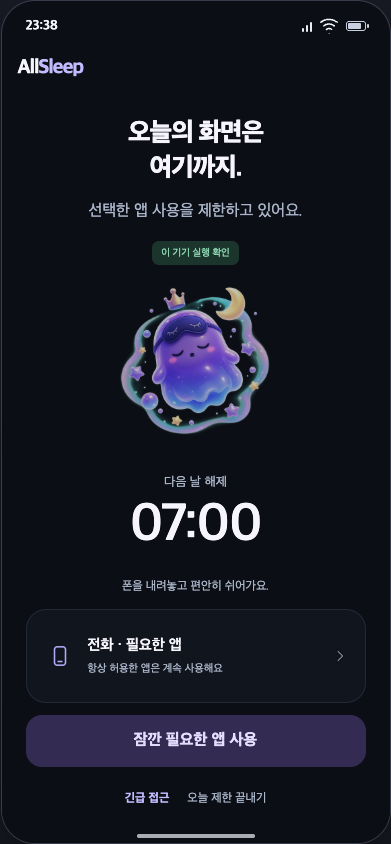
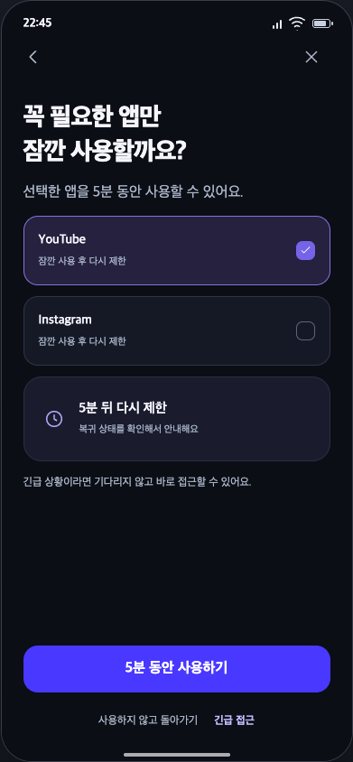
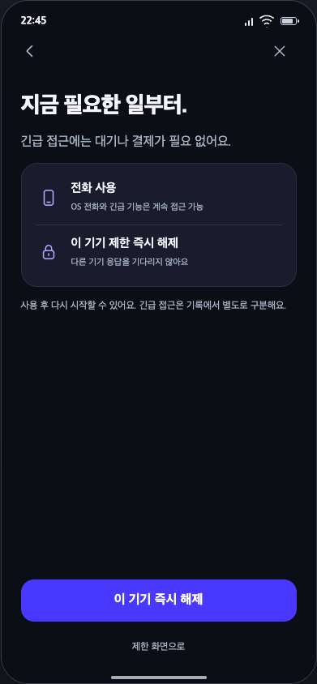
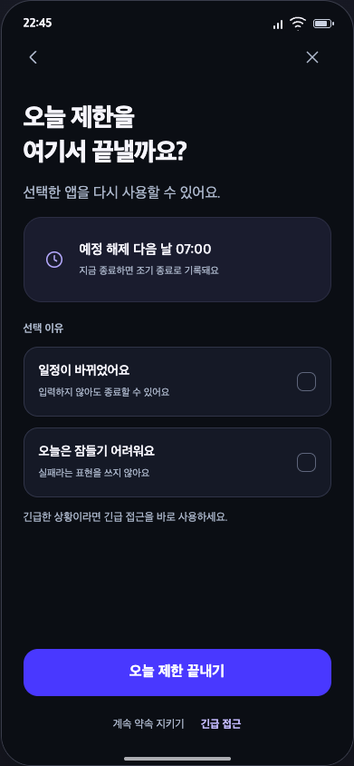
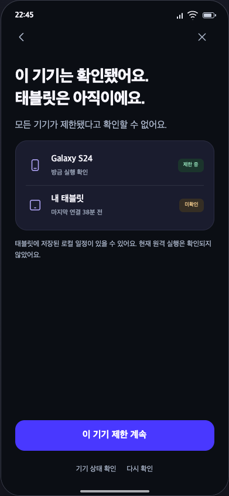
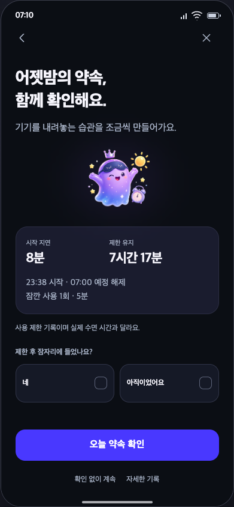
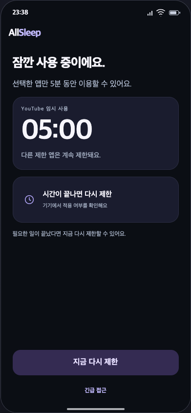
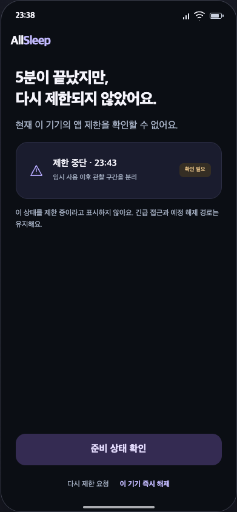

ALLSLEEP / FINAL SCREEN DESIGNS / 04밤과 아침 · 8개 화면
선택 앱 제한, 임시·긴급 접근, 종료와 아침 확인. 밤에는 주요 탭을 숨깁니다.

사용 제한 중
N01 · 잠깐 필요한 앱 사용
잠깐 앱 사용
N02 · 5분 동안 사용하기
긴급 접근
N03 · 이 기기 즉시 해제
조기 종료 확인
N04 · 오늘 제한 끝내기
일부 기기 미확인
N05 · 이 기기 제한 계속
아침 결과
N06 · 오늘 약속 확인
임시 사용 진행
N07 · 지금 다시 제한
임시 사용 복귀 실패
N08 · 준비 상태 확인